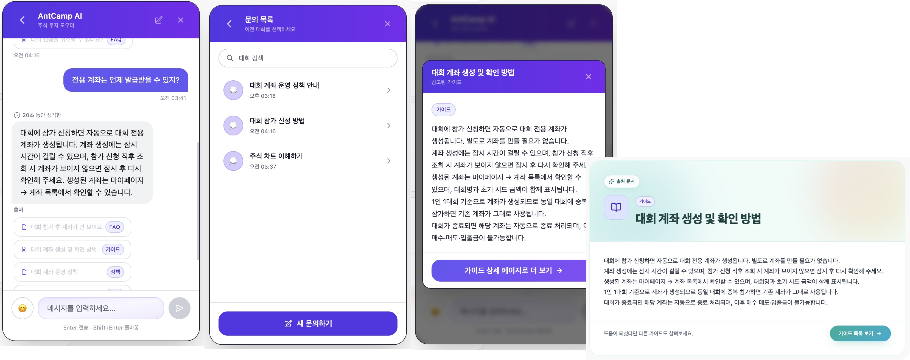
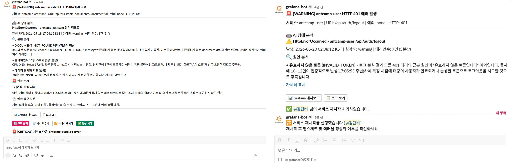
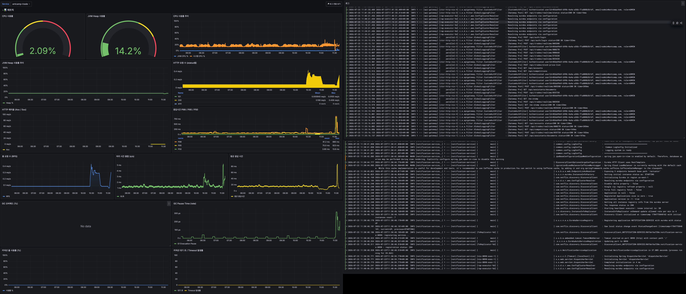
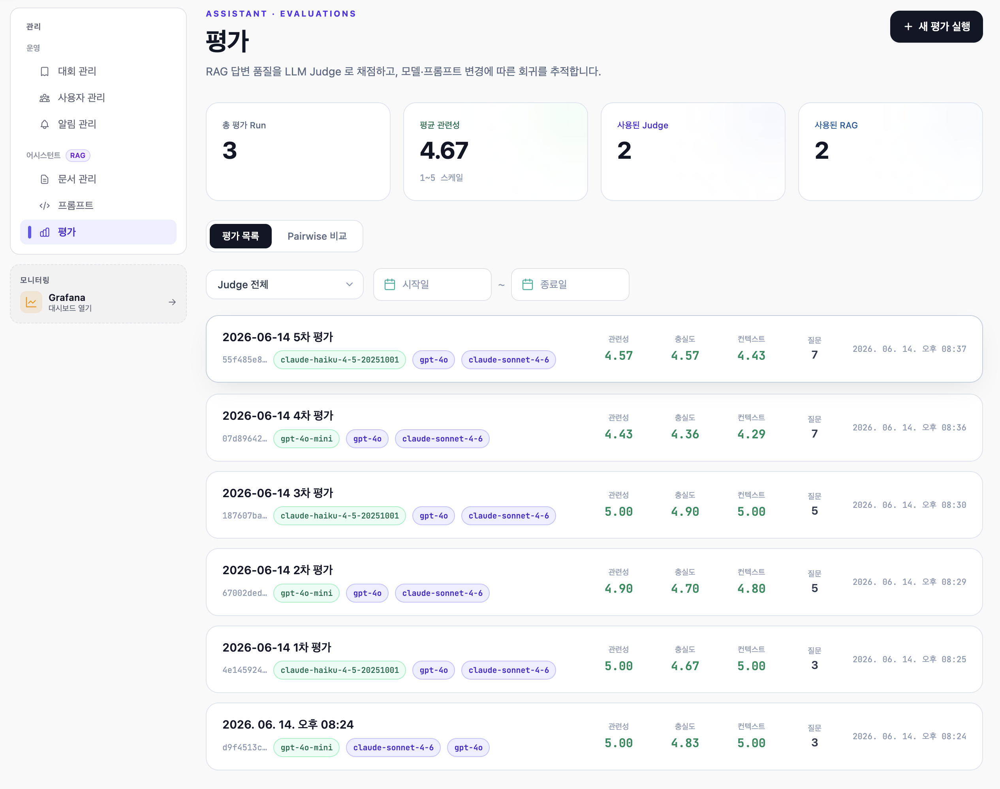
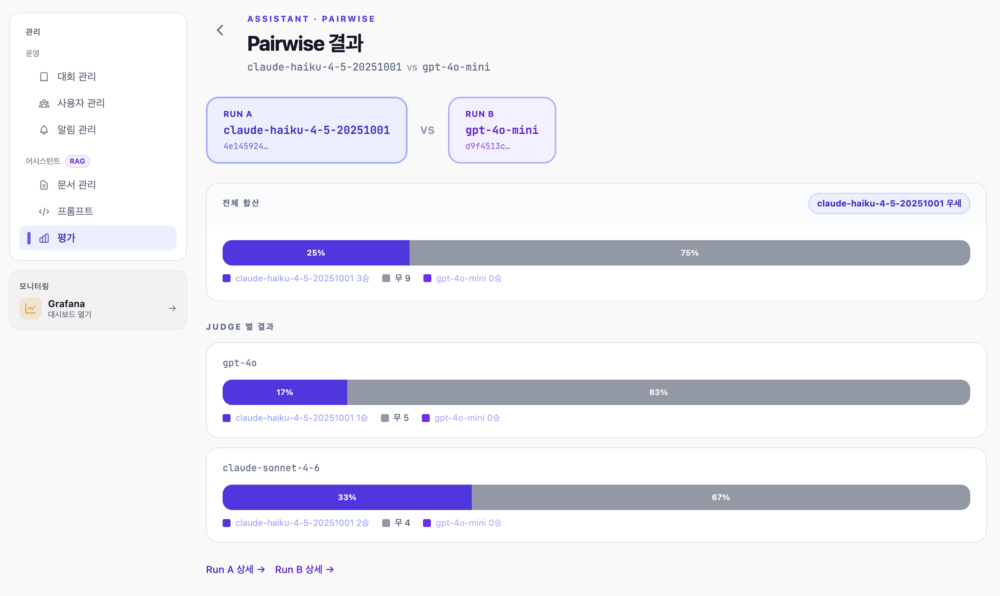

클릭: 확대 / 축소 · 드래그: 이동 · 휠: 배율 · ESC: 닫기
모놀리식 → MSA → LLMOps로 이어진 설계 성장의 마지막 매듭. RAG 답변 품질을 LLM-as-a-Judge로 정량 평가하고, Prometheus·Loki·Claude를 묶어 알림에 원인 분석과 복구 액션까지 자동 부착하는 시스템을 설계·구현했습니다. AI를 외부 API처럼 덧붙이는 데 그치지 않고, 운영 모니터링 시스템의 일부로 통합한 점이 차별점입니다.
MSA 환경의 주요 비기능 요구는 장애 추적·실시간 메트릭·중앙 집중 로그·자동 알림입니다. ELK · CloudWatch · Datadog 등 후보를 운영 비용 · 의존성 · 우리 규모 적합성 세 축으로 비교한 결과, Prometheus + Grafana + Alertmanager + Loki + Promtail(이하 PGAL)이 적절하다고 판단했습니다.
| 도구 | 선택 이유 (한 줄) | 활용 목적 |
|---|---|---|
| Prometheus | MSA 사실상 표준 · Spring Boot Actuator 연동 용이 · 시계열 저장 최적화 · PromQL | CPU/Memory/API 응답시간/에러율/요청수 추적 |
| Grafana | 다양한 데이터 소스 + Loki/Prometheus와 높은 호환 + 대시보드 자유도 | 서비스별 메트릭 시각화 · 운영 대시보드 · 장애 실시간 확인 |
| Alertmanager | Prometheus 자연스러운 통합 · 조건 기반 · Slack 연동 용이 | 임계치 초과 → Slack 알림 · API Error Rate 증가 감지 |
| Loki | Elasticsearch 없이 로그 저장 · 라벨 인덱싱으로 비용 절감 · Docker 궁합 | 서비스별 중앙 로그 · 장애 로그 분석 · Trace ID 요청 추적 |
| Promtail | Docker 로그 수집 단순 · Loki 공식 연동 · 설정 단순 | 컨테이너 로그 수집 · 서비스 라벨링 · Loki로 전달 |
Google Cloud Platform 위에 역할별 VM 5개 그룹으로 분리 배포합니다. APP VM(서비스 컨테이너) · Redis VM(랭킹 캐시·dedup) · Monitoring VM(관측 스택 단독) · Infra VM(Config·Eureka) · Kafka VM(이벤트). 외부 의존성(Vercel 프론트 · 한국투자증권 API/WebSocket · 네이버 뉴스 · Cloud SQL · GCP Container Registry)은 GCP 경계 바깥에서 통신. AI Assistant(녹색)와 Notification(주황) 두 흐름이 동일 인프라를 공유합니다.
위 구성은 발표 시점의 아키텍처입니다. 발표 종료 후 운영 비용을 줄이고자 백엔드·프론트엔드 전체를 OCI 단일 인스턴스(Docker Compose + Nginx)로 직접 마이그레이션했고, 현재 라이브 데모가 그 위에서 동작합니다.
역할별 VM 토폴로지. 두 흐름의 단계별 상세는 아래 시퀀스 다이어그램 참고.
| 결정 | 대안 | 선택 이유 — 정량 가정 · 확장 계획 포함 |
|---|---|---|
| 역할별 VM 5개 분리 | 단일 VM 통합 · K8s 클러스터 | 학습/포트폴리오 환경엔 K8s가 과함. 단일 VM은 SPOF·자원 경합 위험. 역할별 분리로 장애 격리와 자원 독립성 확보. 운영 시 GKE로 단계적 이행 가능. |
| pgvector | Pinecone · Milvus | 문서 수 수천 건 · QPS 한 자릿수 가정엔 cosine + IVFFlat로 p95 충분. 수십만 건 또는 멀티테넌시 시점에 외부화 검토. |
| Spring AI + 모델명 라우팅 | provider별 SDK 직접 호출 | LLM(OpenAI/Claude/Gemini)을 Port 뒤로 추상화 → 모델 교체 시 application 무수정. Pairwise 비교 실험 자유로움. |
| Claude Haiku (장애 분석) | Opus · Sonnet | 알림은 빈도 높고 빠른 요약이 관건 → Opus 대비 약 1/10 비용, max_tokens 2000. |
| Human-in-the-Loop | LLM 전자동 실행 | 운영 컨테이너를 건드림 → AI는 추천까지, 실행은 사람 클릭. 자동화 효율과 인간 판단 안정성 사이의 균형. |
| Reconciler(@Scheduled) | 메시지 큐 (DLQ) | 인제스트 동시성 분당 수십 건 가정엔 60초 주기 보정으로 SLA 만족. 분당 수백 건 이상 시 Kafka DLQ 전환. |
| 단일 인스턴스 → 분산 락 생략 | ShedLock · 리더 선출 | 각 서비스 단일 인스턴스 배포 토폴로지 → 스케줄러 중복 실행 자체 발생 X. 수평 확장 시 ShedLock + 컨슈머 멱등 처리. |
P · 대다수 RAG 프로젝트는 답변 품질을 "느낌"으로 판단하고 모델 교체를 "감"으로 결정 → 품질 회귀(regression) 위험을 막을 정량 체계 필요. 특히 LLM 평가의 가장 알려진 함정 self-preference bias(LLM이 자기 출력에 더 후한 경향, 연구로 보고됨)가 차단되지 않으면 평가 결과 자체가 신뢰 불가.
A · 검색 → 채점 → 비교 3단계로 정량 평가 파이프라인 구성. self-preference bias는 코드 레벨에서 차단 + Judge 2종 교차 검증으로 다중 방어.
R · 점수·승률 기반으로 gpt-4o-mini → claude-haiku 교체. OpenAI 자사 gpt-4o조차 gpt-4o-mini를 낮게 평가 → 계열 편향 데이터로 반박.
Judge 모델 == 응답 생성 모델이면 채점 자체를 skip. 자기 출력에 후한 경향을 회피.
claude-sonnet-4-6 + gpt-4o 양쪽 모두 돌려 한 모델에 결정 의존 X. OpenAI 자사 gpt-4o조차 gpt-4o-mini를 낮게 평가.
A/B 위치를 교차해 양방향 비교 → 위치 편향(앞쪽 유리)까지 회피. 결과: 6승 0패.
// EvalProcessor.judgeAndSave() if (judgeModel.equalsIgnoreCase(ragQuery.getLlmModel())) { log.warn("Self-preference bias 방지: skip. model={}", judgeModel); return; }
| 지표 | gpt-4o-mini (n=28) | claude-haiku (n=12) |
|---|---|---|
| faithfulness | 2.38 | 4.04 |
| relevance | 2.38 | 4.00 |
| contextPrecision | 2.32 | 3.92 |
| 환각률 (faith < 3) | 64.3 % | 8.3 % |
| Pairwise (A/B 교차) | 0승 | 6승 0패 (TIE 0) |
표본 40건은 통계적 검정력 충분치 않으나 ① 두 Judge 동일 방향 ② Pairwise 동일 방향 → 방향성 견고. 정밀화 시 골든셋 200건+ 확대 및 사람 평가자 inter-rater agreement 측정으로 Judge 신뢰도 자체 검증 계획.

CLICK TO ZOOMP · Prometheus → Slack 단순 알림은 "임계값 초과" 사실만 전달 → 운영자가 Grafana·터미널을 왕복하며 원인 추적에 시간 소요(MTTR의 대부분). 동시에 LLM 자동 실행은 운영 컨테이너를 건드리므로 위험.
A · Alertmanager webhook부터 Slack 메시지까지의 파이프라인을 dedup → 컨텍스트 수집 → LLM 분석 → HITL 액션 4단계로 구성. AI는 추천까지, 실행은 사람 클릭이라는 안전선 확보.
SET NX, TTL 1h)로 중복 알림 차단R · 알림 수신 후 수 초 내 "근거 메트릭/로그 + 권장 조치" 자동 게시. AI를 운영 모니터링 시스템의 일부로 통합.
// Slack 3초 응답 제약 → @Async ACK 후 메시지 갱신 @Async("slackActionExecutor") public void executeAndNotifyAsync(SlackActionCommand command) { trySlack("처리 중", () -> alertPort.markAsProcessing(...)); ActionResult result = executeAction(...); trySlack("완료/실패 갱신", () -> alertPort.markAsHandled(...)); }

CLICK TO ZOOM@Async ACK 후 "처리중 → 완료/실패"로 메시지 갱신. Slack 3초 응답 제약 해소P · LLM 제안 시스템은 ① 인프라 서비스 오작동(LLM이 gateway/kafka에 destructive action 권유), ② 외부 위변조 요청(공개 endpoint 노출), ③ LLM 입력으로의 PII/시크릿 유출 등 다층 위험을 동시에 가짐.
A · 세 위험에 각각 독립적 방어선을 둠 (아래 3겹).
R · 세 시나리오 모두 fallback 동작 검증 완료 — ① notification-service 자기 장애 시 Alertmanager match_re fallback으로 Slack 직통, ② LLM API 장애 시 단순 텍스트 fallback, ③ 비동기 ingest 실패 시 Reconciler 자가복구.
gateway·kafka 등 infrastructureJobs는 SlackBlockBuilder에서 버튼 자체 미노출 + executeAction 진입 시 화이트리스트 차단. API/payload 조작 우회까지 방어.
공개 endpoint에 전용 필터: HMAC-SHA256 서명 검증 + timestamp 5분 초과 거부(replay) + MessageDigest.isEqual constant-time 비교(timing attack). body는 CachedBodyRequest 래핑.
token · password · secret · bearer → [REDACTED], 이메일 → [EMAIL], 로그 4000자 제한. 외부 LLM 호출 직전 최종 검증.
P · 토이/부트캠프 프로젝트는 측정 시스템 부재로 정량 수치를 못 남기는 경우가 많음. "측정 가능한 시스템을 처음부터 만들었다"는 것 자체가 차별점이며, alert 룰 설계 역시 노이즈와 심각도를 함께 고려해야 함.
A · 관측 스택을 주도 구축하고 alert 룰 7종을 `for:` 지속조건으로 차등 설계 — "터지면 큰가(심각도) × 자주 출렁이나(노이즈)"를 함께 반영.
docker_sd_configs 컨테이너 자동 발견)R · MTTD < 1분, 반복 알림 LLM 비용 0(dedup). SPOF 해소 fallback까지 완비.
| 룰 | 임계 / for | 심각도 | 근거 |
|---|---|---|---|
| ServiceDown | up == 0 / 1m | critical | scrape 15s × 4회 연속 실패라야 발동 → 순간 끊김과 구분 |
| ConnPoolPending | > 3 / 1m | critical | 대기 자체가 고갈 신호 → 가장 짧게 |
| HighCPU | 0.8 / 2m | critical | throttling 시작 구간, 100% 직전 여유 |
| HighMemory · ConnPoolNear · HttpError | / 2m | warning | 스파이크와 추세 구분 가능한 지점 |
| HighGcOverhead | 0.1 / 5m | warning | 단기 변동 잦아 가장 길게 |
★ SPOF 해소 — notification-service 자기 장애 시 Alertmanager match_re(라벨 정규식 매칭으로 알림 라우트 분기) fallback으로 Slack 직통(LLM 분석 없는 단순 텍스트로 알림 보존).

CLICK TO ZOOMP · RAG 답변은 LLM 생성에 수 초가 걸리고, FAQ·약관·매매규칙처럼 동일·유사 질문이 반복되는 도메인에선 매번 풀 RAG를 도는 게 지연·비용 낭비.
A · 첫 턴 질문을 임베딩해 pgvector 의미 캐시(p_response_cache)에서 1 - cosine ≥ threshold & 미만료면 저장된 답변을 즉시 반환, 미스 시 풀 RAG 후 캐시에 적재(TTL은 config 값).
latencyMs를 워크로드별로 분리 측정R · 캐시 히트 시 0.95s로 미스(긴 답변 3.68s) 대비 2.73s↓ (74%, 3.9배), LLM 생성(2.41s) 자체를 제거.
| 구분 | 클라이언트 wall-time (중앙값) | 서버 LLM latencyMs |
|---|---|---|
| 미스 — 긴 답변(100–185자) | 3.68s | 2.41s |
| 미스 — 짧은 거절(82자) | 2.82s | 1.34s |
| 캐시 히트 | 0.95s | LLM 호출 스킵 |
| 워크로드 | hits/n | hit율 |
|---|---|---|
| exact-repeat (동일 질문 재요청) | 10/10 | 100% |
| paraphrase (동일 의도, 다른 표현) | 0/10 | 0% |
사용자 화면과 관리자 콘솔 전체를 React·TypeScript·Tailwind로 구축했습니다. 백엔드에서 만든 RAG 평가·AIOps 기능을 운영자가 실제로 쓰는 화면까지 이어 만든 것이, 이 프로젝트에서 풀스택으로 일한 방식입니다.

CLICK TO ZOOM
CLICK TO ZOOMLLM-as-a-Judge 평가 파이프라인(백엔드)부터 그 결과로 모델 교체를 결정하는 콘솔(프론트)까지 직접 구현했습니다. 덕분에 화면이 필요로 하는 형태로 API를 설계할 수 있었고, 평가 → 비교 → 적용으로 이어지는 운영 흐름이 화면 안에서 끊기지 않습니다.
상태 관리 — Redux vs Zustand. Redux의 강점(예측 가능한 단방향 흐름, 미들웨어·DevTools 생태계, 대규모 팀 협업 규약)과 비용(보일러플레이트, 러닝커브)을 이 프로젝트 조건에 비춰봤습니다. 전역 상태가 인증·시세·테마로 한정적이고 5인 단기 프로젝트라, Redux의 구조적 이점을 살릴 규모가 아니라고 판단해 가벼운 Zustand를 택했습니다. "왜 이 기술인가"를 설명할 수 있을 때 고른 선택입니다.
"외부 호출 때문에 트랜잭션이 길어졌다"는 표면적 설명에서 멈추지 않고, 커넥션 풀 → 톰캣 워커 스레드 → 세션 한계까지 원인을 윗단으로 추적한 사례들.
@Transactional로 묶으면 LLM 응답 대기 내내 HikariCP 커넥션 점유hikari_connections_active + llm_call_duration 게이지로 점유 시간 정량화 예정DocumentReconciler 60s 주기로 10분 PROCESSING 감지findMaxSeqForUpdate에 @Lock(PESSIMISTIC_WRITE)로 채번 구간 보호| 영역 | 스택 |
|---|---|
| Backend | Java 17 · Spring Boot 3.5 · Spring Cloud (Eureka · Config · Gateway) · Spring AI 1.0 |
| Frontend | React · TypeScript · Tailwind CSS · Zustand · Recharts |
| AI / LLM | LLM-as-a-Judge · Pairwise · pgvector · Claude (Anthropic) · OpenAI · Gemini (fallback) |
| Data | PostgreSQL + pgvector · Redis · Kafka |
| Observability | Prometheus · Grafana · Loki · Promtail · Alertmanager · Zipkin |
| Infra | Docker · Terraform · GCP · GitHub Actions |
프로젝트를 마치며 세 갈래로 정리. 무엇을 잘했고, 어떤 부분이 의도적 선택이었으며, 어디가 진짜 아쉬웠는지.
replication_factor=1 · retention 미설정